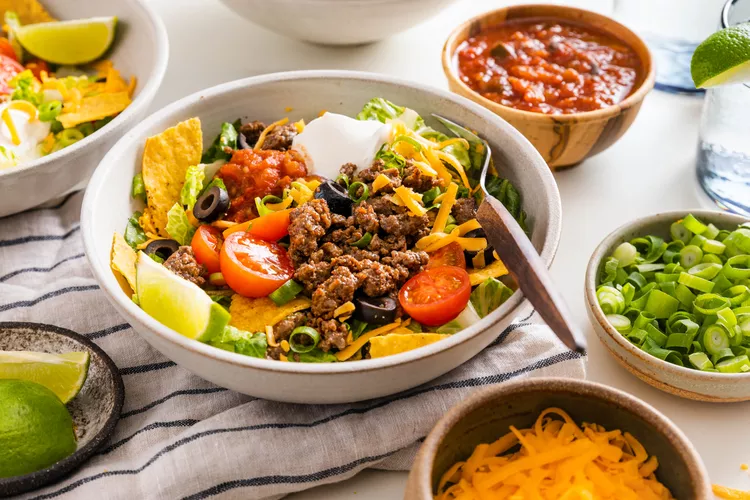

Taco Salad

Ingredient:
- 1 pound ground beef, 85/15 (ground turkey or crumbled tofu work equally well too)
- 1 teaspoon olive oil
- 2 tablespoons taco seasoning (from one 1-ounce package)
Steps:
- Brown the meat
- Prep the salad ingredients
- Make the ricotta mixture
- Sauce the meat
There is something about taco salad that just says family meal.
Taco Salad, a Dish Rooted in Pop Culture. It’s time to bring the taco salad out of pop culture and back to the weeknight dinner table where it can shine.